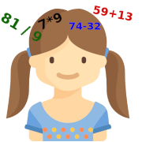
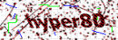

CodKep
CodKep is a lightweight web framework (php)
CodKep is a lightweight web framework written in PHP. It heavy inspired by the Api of Drupal CMS. It tries to be as robust as Drupal when coding without the bloatness of GUI.CodKep is designed to build very database active sites where the design is not the primary goal, but the other side lots of database functions forms and queries are used. To achieve this the CodKep have rich set of form generation api.
Documentation of CodKep
Hasses
Hyper's Asynchronous Server Sent event (SSE) notification Server (C)
Hasses is a small notification server using Server Sent Event (SSE). It has asynchronous design to handle more clients in same thread. It uses linux epoll() function.Most SSE example uses server side codes holds a connection to each client. It is usually means a process/thread for each client connection, which is not optimal when the number of clients are rising. This daemon act as a minimal web server which suitable to handle SSE connections only, and can handle all incoming connections in one thread. The main web server environment (which serve the web pages) can send the notifications to the clients through a separate network connection or a FIFO file. The clients can connect to the hasses server with a special token(s), which are usable to address messages to a subset of clients or event one client.
The daemon has a rich logging and client tracking possibility.
UniSync
Universal offline/online direcotry sync/diff utility (C++, Multiplatform)
Documentation / User manualUniSync is a small command line utility with the UniSyncGui graphical frontend to achive the following goals:
Search the differences of two directory structure.
Checks the directories, file sizes, modification times, and file hashes (md5,sha256). You can compare two (same time available) directory contents, or you can even compere two offline directory structures too. UniSync can create a catalog file which contains, the stucture, the sizes, hashes, etc,.. and later comperes it to another directory on a different machine too.
Syncronize two directory structure.
Checks the directories, file sizes, modification times, and file hashes (optional) and syncronioze the differences of the directories.
Creating incremental backup of a directory structure.
Because the unisync can generate an update package from a directory structure according to a catalog file it can be used to generate incremental backup of a directory tree. The only necessary thing you have to do is to create a catalog with unisync when the full backup is archived. Later the unisync can compare the data matching to the live data and create a directory as incremental backup.
Offline syncronize two directory structure.
The unisync can even syncronize two directories which can't available same time. The unisync can make a catalog from the OLD directory structure. After you tranfer this small catalog file to the second place where the NEW directory structure is located, the unisync can generate and "update package" to sync the OLD directory to same content as NEW. After you bring back the update package to the OLD directory, the unisync can apply this update. This way you can syncronize two different located not available directories with big amount of data. Of course the "update package" contains the modified and new files only.
NtfsTame
NTFS file/directory name encoding corrector (C)
NtfsTame is a command line program to corrent the bad coded unicode characters of ntfs filesystem. You can specify a map file to tell the code replacements needed to do on the file and directory names.HyperCalc
HyperCalc is a high precision command line styled calculator (C++, Multiplatform, Qt)
This is a console styled calculator, which is similar to linux "bc".It designed to be simple, easy to use and fast. The calculations evaluated with correct precedence, using decimal based numbers with high precision to avoid floating point errors. (The base mathematical functions built on boost c++)
You can use hexadecimal, octal and binary numbers as input or output. Available operators/sings:
+ - * / % ^ ( )The program has many internal functions and loadable functions and you can define new ones
Wallpaper Finer |
Fits your images the easiest way as desktop wallpaper! (C++)
Wallpaper finer is small easy to use utility which adjust (crop) your images perfectly to fit your desktop, and immediately set as wallpaper according to your instructions. What does it mean?Usually our digital photos have different aspect ratio than our desktop. This utility detects the desktop resolution, and propose a perfet image crop to keep your image's aspect ratio. (It means that your dog won't looks like fatter than in real life) You can modify the cropped area by single mouse move.
After you found your best crop, you can set the cropped part as your desktop wallpaper by a single click. The program will save scaled down image crop and set it as desktop wallpaper. (Of course your original image will be untouched!)
The program works on Windows XP, Vista, Windows 7, Ubuntu linux (On Gnome based WM)

gSAFE Library
General Sql dAtabase Front End Library (C++, Multiplatform, Qt)
gSAFE is a General Sql dAtabase Front End multiplatform library written in C++ based on Qt. It is a complex system which define meta objects (Tables / Lists), which can autogenerate the graphical interfaces to manipulate the data. These meta objects can work together with Sql databases (PostgreSQL,MySQL,SQLite,Odbc) handles timestamps, concurence writing etc. The meta objects contains all information about the data which need to manupulete, shows, store, print or even make a excel table from its, including the attributes for the gui to edit the fields. You can define this meta object from program code or XML source. After you defined the meta object they can be attached to gui or send to printer or make a table. The gui is generated by the attributes of meta data table. This library enables you to develop sql based application really quick time. The base library is developed with Qt so the generated gui is a Qt based gui, work on all platform where the Qt runs.
pRepo |
Peter's repository program (C++, Demo and tutorial for gSAFE)
pRepo is a small repository program, which intend to shows using of gSAFE. It is a complex tutorial written in less than 1000 rows C++ file. It uses many functions of gSAFE (XML metadata,Dynamic GUI building, Role system, Logger system,etc)About "pRepo": It is a Repository program. You can add objects to the system, the program gives an unique repository number for every object. You can specify serial numbers, types, incoming values and dates. You can also define places where the object is currenty located and accountables which is assigned to the stored objects. Every changes made on objects is automatically logged, and you can trace it with this program. No metter how many changes you did on an object, the tracing is always shows you the history of every object. It stores the data in sqlite database, so you can use this program everywhere, don't need server connection or internet. This program can run on Win32 and Linux too.
ScanLocs |
ScanLocs is a folder structure GPS location scanner (C++)
I like to travelling and photographing. The last few years I colleted lot of gigabytes of pictures. This photos are stored on my computer in a different folders separated by trip/date. It's easy to search a photo according the shooting time, but hard to find photos taken on a specified city or other location. I decided to write a small program which can solve this problem.ScanLocs is a small command line program. It scans a whole directory structure and collects the GPS location data which are stored in a small tag files. This tag files are small text files containig GPS coordinates, they are located in picture folders. After the scanning process you can opens a html (goole map) in your browser and see all of the locations you photographed. By clicking to this location your browser can jump to the picture folder to show the files.
"Myth" drupal theme
A highly customizable drupal 7 theme
Myth is a from scratch theme made for Drupal 7. It supports main menu with submenus without any other module or plugin. (You only have to insert the main menu to the necessary menu block area) It supports color schemes, but you can adjust colors individually in the settings page. Myth has many block area, and customizable page handlig.I have written this theme on Drupal 7 so it only supports 7.x versions. (And not backward compatible)
TreeGen
OpenGL based environment generation (C++, uses the gSAFE)
TreeGen is an environment generator. Generate normal trees palm trees undergrows (Fern) grass. You can adjust the parameters of the generation, so you can generate different kind of trees or other objects. The program uses OpenGL and GLSL (OpenGL Shader Language). The generated objects stores the parameters which are editable later, can be saved or loaded from file. The stored files are sqlite databases. The program could generate scenes with more million triangles so it can be use to measure the performance of the video card. I wrote it to have a fun, and practise the OpenGL and shaders. It uses/contains the gSAFE library (mentioned above) to edit/store/load the parameters of the generated objects. So this program is an example of using the gSAFE too.Rotor
Fast lossless jpeg image rotator (C# .NET/Mono)
Hyper Image Rotator is a small program which targets to rotate your jpeg photos lossless to the viewing position. The main idea to minimalize the user interaction rotating (One click one rotation) and do the work at the end (in batch mode). The program shows you all the possible rotaion variants of your picture (0 degree, 90 degree, 180 degree and 270) so you can select the good picture with a click. The animated moving is help you to track which is the next photo. You can also delete the bad pictures also. The program doensn't modify anything, until the end, when you push the apply button which case the rotator apply the needed operations. Written in C# works and tested under windows .NET and Linux Mono (with Winforms lib)The new 1.1 version can read the jpeg's Exif orientation tag too, so you can set the positions according to this tag.
HyperChat
Compact stand alone clinet/server graphical chat program (C# .NET/Mono)
HyperChat is a compact client/server chat program wihch allows to chat with graphical mode. The chat partners have a common drawing area so anyone can draw to it during the chat. The users can draw many ways an colors, and the pictures can be saved in file. At the start you can select the program network operation mode (Server/Client) Written in C# works and tested under windows .NET and Linux Mono (with Winforms lib)SplitView
Huge image viewer for PDA (C# .NET Compact Framework)
Splitview is written for one reason. My pda (Windows mobile) can't show big images (~10Mb jpg). This files are tipically map files. So I decided to write a small program to my PC which can split the big images to smaller mosaic parts, and generate an index file to pair the mosaic files to each other. And secondly I wrote a small viewer to my PDA which can view the big map file very fast way, becouse it's only shows a small mosaic parts, and automatically load the next one if I sroll the picture. This is the Splitview. Written in C# and works on all windows mobile platform which supported by the .NET Compact Framework. The splitter program is run on PC (.NET)Other old programs
¨Hyper's CdCatalog¨ aka ¨CdCat¨ A multiplatform catalog program last win-binRenamer A batch file renamer program last win-bin
Hyper's world An OpenGL based first person shooter game (Net multiplayer)
Math exercises for kids / Matematikai feladatok gyerekeknek
| Author: | Péter Deák |
| Contact Email: | at gmail.com |